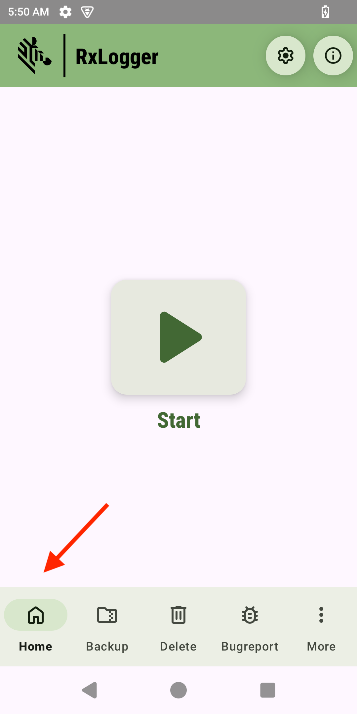
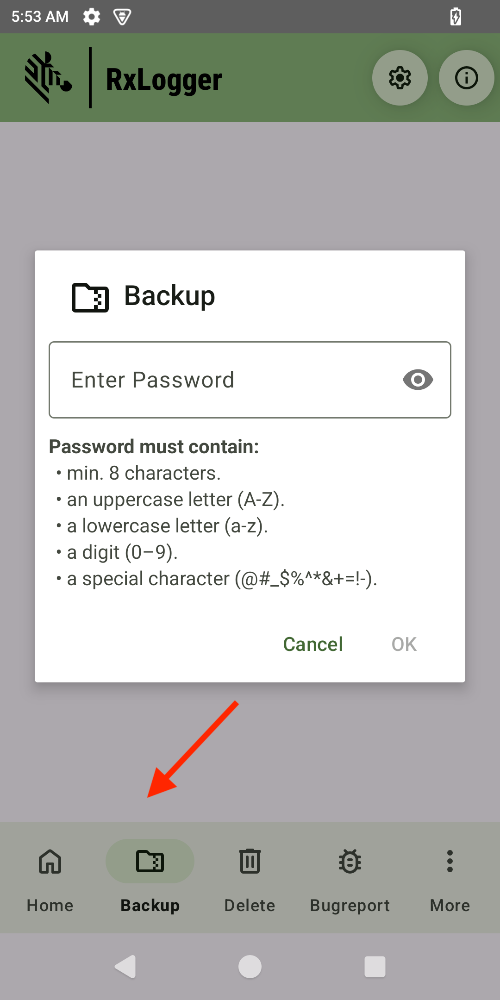
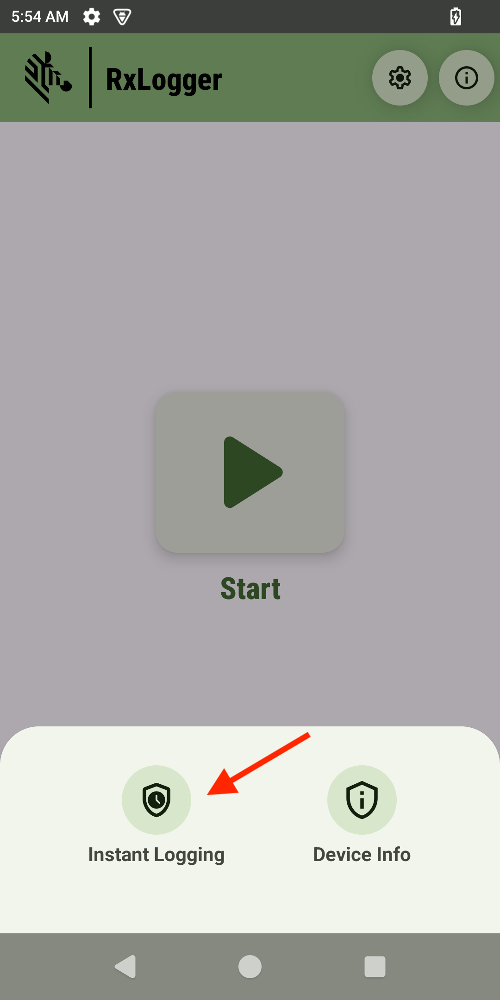

ADVISORY
Starting with Android 15, RxLogger defaults to Secure Mode. with non-secure legacy mode deprecated in Android 14 and phased out by Android 15. Consequently, RxLogger will only process intents from third-party apps via the AppOps method, and Secure Backup will replace the non-secure legacy backup method as the standard.Overview
This guide outlines the available options for using RxLogger. While the standard workflow involves configuring the logging modules to specify the type of information to log and setting logging parameters (for example, log duration) before starting the logging process, this guide highlights additional options and features beyond the standard workflow.
States
The main screen of RxLogger displays an action button (Start or Stop depending on the current state), with options displayed at the bottom menu. On devices with compact screens, the user interface is adjusted to accommodate the smaller size.
Stopped
Initial state of RxLogger upon launch. To start logging, tap the Start button.
Transitioning
The transitioning state immediately follows after tapping the Start or Stop button.
Running
After logging starts, the Stop button is displayed in the running state. Tap this button to terminate logging.
The property persist.sys.dd.autostart is available for applications to determine the running status of RxLogger. It returns true or false based on whether RxLogger is running.
Menu Options
This section discusses the options accessible from the menu buttons located at the bottom of the main RxLogger screen.
Home
Home Displays the main home screen.

Backup (Collect Logs)
The Backup feature offers a convenient way to collect RxLogger logs on-demand. These logs are user-accessible and are particularly helpful for saving diagnostic data immediately after an issue occurs. This feature creates a password-protected .zip file containing the RxLogger logs, providing a secure and efficient method for saving and accessing logs.
- Password requirements: Passwords must be at least 8 characters in length and include an uppercase letter, a lowercase letter, a digit, and a special character, such as
@#_$%^&*+-=!. - File storage: When accessing the .zip file, users must enter the password that was set during its creation. The backup file is named based on the date and time of creation, using the format:
SecureBackup-<date>-<HHMMSS>.zip. It is stored in one of the following locations:- Internal storage:
/sdcard/Android/data/com.symbol.rxlogger/RxLogger/secure/log_data/ - External storage:
/storage/<UUID>/Android/data/com.symbol.rxlogger/RxLogger/secure/log_data/, whereUUIDrepresents the unique identifier of the device.
- Internal storage:
There are two methods to create a backup:
- RxLogger - Tap Backup from the bottom menu on the main screen and enter a password when prompted. 
- Android intent - Use the BackupNow broadcast intent with password, see BackupNow.
Delete Logs
Delete clears log storage and optimizes space by removing specified log types, either log files or backup files. This option is unavailable while RxLogger is active and only becomes available when RxLogger is stopped, ensuring data integrity and preventing accidental deletion during logging.
Note: The config.json and RxInfo.txt files are preserved to retain essential configuration and remove intent data.
There are two methods to create a backup:
- RxLogger - Tap Delete from the bottom menu on the main screen, select the file type to remove, and tap Delete. The options for file type are:
- Log file(s): Deletes all files stored in either of the following storage path in use:
- Internal storage:
/sdcard/Android/data/com.symbol.rxlogger/RxLogger/secure/log_data/ - External storage:
/storage/<UUID>/Android/data/com.symbol.rxlogger/RxLogger/secure/log_data/, where<UUID>is the device's unique identifier
Note: For logs to be captured, the external storage SD card must be encrypted through Encryption Manager from MX. If not, the log path defaults to the internal storage path.
- Internal storage:
- Backup file(s): Deletes only files generated from a backup, stored in either of the following file paths:
- Internal storage path:
/sdcard/Android/data/com.symbol.rxlogger/RxLogger/secure/log_data/SecureBackup-<date>-<HHMMSS>.zip - External storage path:
/storage/<UUID>/Android/data/com.symbol.rxlogger/RxLogger/secure/log_data/SecureBackup-<date>-<HHMMSS>.zip
- Internal storage path:
- Log file(s): Deletes all files stored in either of the following storage path in use:
- Android intent - Use the Delete broadcast intent, see Delete Logs.
Bug Report
The Bug Report collects and compiles diagnostic data, including device logs, stack traces, and system information, to assist in troubleshooting app or system issues. This feature offers flexibility to initiate data collection whether RxLogger is running or stopped. To avoid overlapping reports, the Bug Report option is temporarily disabled until the current report is completed, depending on the Android platform. It may take up to a few minutes to generate the report.
The bug report includes the following:
- Dumpsys - Diagnostic output for system services.
- Dumpstate - System error logs.
- Logcat - System messages, including stack traces and logs from apps using the Log class.
- Systrace - Execution times of app and system processes for performance analysis.
Data is stored in the following folder paths:
- Internal storage:
/sdcard/Android/data/com.symbol.rxlogger/RxLogger/secure/log_data/ - External storage:
/storage/<uuid>/Android/data/com.symbol.rxlogger/RxLogger/secure/log_data/, where<uuid>represents the UUID of the device
There are two methods to create a bug report:
- RxLogger - Tap Bugreport from the bottom menu on the main screen, then tap Yes. Upon completion, a message appears indicating success or failure. If successful, bug report is saved as a .zip file named:
RxBugreport-<ProductName>-<BuildID>-<Date>-<Time>.zip - Android Intent - Use the Bugreport broadcast intent.
Instant Logging
Instant Logging simplifies the process of capturing logs by enabling users to collect specific logs on-demand, offering a quick and efficient way to diagnose device-related issues. Users can easily select the desired log type - such as Battery, Audio, Scanner, Bluetooth, Wi-Fi or Cellular - define the logging duration, and initiate the capture process. Once the designated duration ends, the logging process automatically terminates, and the logs can be accessed and retrieved from the device.
Logs captured with Instant Logging are distinctly marked with the text "Single-Touch" at the beginning of their log content, indicating the log type. In contrast, logs not generated using Instant Logging are labelled with the term "Legacy" instead.
Access Instant Logging
There are two methods to access Instant Logging:
- From the RxLogger Main Screen: Tap More, then tap Instant Logging to display the Instant Logging screen.
 
- Using the RxLogger App Shortcut: From the Android home screen, open the zMonitor folder. Tap and hold the RxLogger app icon, then select Instant Logging to open its screen.
Enable Instant Logging
To enable Instant Logging, tap Enable Module and perform the following:
- Log Module(s): Select the module(s) to enable logging:
- Battery - Captures QXDM logs filtered for battery-related data.
- Scanner - Captures defaultLogcat logs.
- Wi-Fi - Captures Kernel logs integrated with Logcat for a unified output.
- Audio - Captures QXDM logs filtered for audio-specific data.
- Bluetooth - Captures BTSnooplog logs.
- Cellular - Captures QXDM logs with default-lite filter applied. If no selection is made, only the default logs are captured: ANR, Kernel, Logcat, Ramoops, Resource, Snapshot, Tombstone
- Enable Log Duration: Toggle this option to activate logging for a specific time period.
- Log Duration: Choose from 30 minutes, 1 hour, 2 hours, 3 hours, or 4 hours.
|
Device Info
Device Info provides detailed information about the device's hardware (for example, CPU, display, camera, sensors), connectivity, battery, thermal data, and installed apps.
To access Device Info:
- From the RxLogger Main Screen: Tap More, then tap Device Info. This opens the Device Info screen, displaying tabs with categorized information in the top menu.
The following sections offer more information on each tab.
Device
The Device tab displays details such as device name, model, device ID, and serial number.
System
The System tab displays platform details, including Android version, API level, release date, and build ID.
CPU
The CPU tab displays details such as processor, type, features, and frequency.
Battery
The Battery tab displays information such as health, level (%), status, temperature, current, power, and charge cycles.
Network
The Network tab displays information on the Wi-Fi and sim networks.
Connectivity
The Connectivity tab displays details on various modes of connectivity, such as Wi-Fi, Bluetooth, NFC, and USB.
Display
The Display tab provides information on the built-in screen, including resolution, density, brightness level, and refresh rate.
Memory
The Memory tab displays usage information for memory and internal storage.
Camera
The Camera tab displays details on the front and back camera, including megapixels, image resolution, and focal length. Select Front or Back to display the corresponding information.
Thermal
The Thermal tab displays temperature readings for components such as CPU, battery, and USB.
Sensors
The Sensors tab displays details about the device sensors, such as accelerometer, magnetometer, and gyroscope.
Apps
The Apps tab provides information about all applications on the device. The total number of apps is displayed at the top left. This screen also includes tabs to filter apps by category: User apps, System apps, and All apps. For each app, details such as the package name, version, and memory usage are provided.
Related Links
- About RxLogger - Provides an overview of RxLogger and how to use
- Modules - Explains data collection module parameters and settings
- APIs - Used to start and stop RxLogger and back up all data
- Log Viewer - View RxLogger logs in realtime